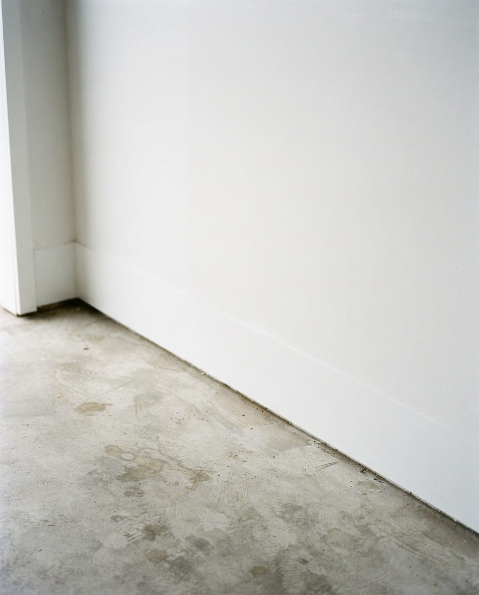
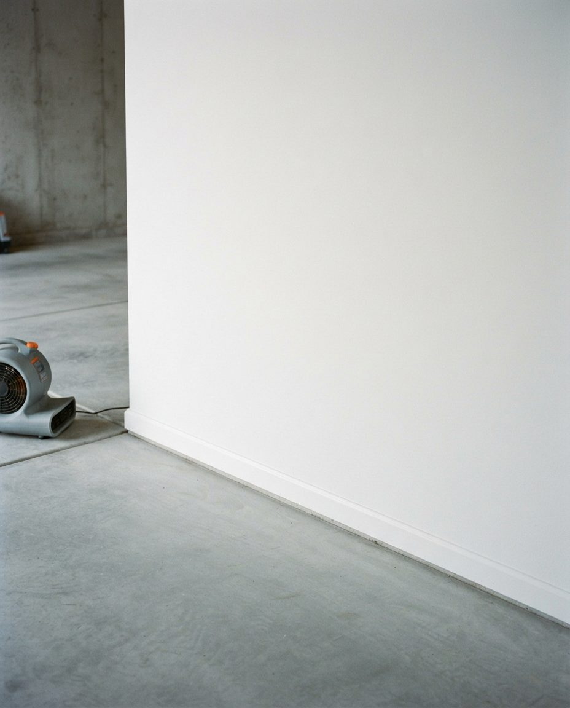

Most Shaughnessy garages are older than the cars parked in them, and in First Shaughnessy the zoning caps how much garage floor a lot can have. So the answer to a full garage is rarely a bigger one. We organize the building you have so the cars, the bikes and the school sports gear all fit, and nothing you care about spends a wet winter on a cold slab.
The Canadian Pacific Railway laid out Shaughnessy Heights from 1907 and named it after Thomas Shaughnessy, the railway's president. Instead of Vancouver's usual grid, the CPR had L. E. Davick and the Montreal landscape architect Frederick Gage Todd draw curving streets that follow the slope, with The Crescent and its park at the centre. Lots ran from a fifth of an acre to an acre and a half, and the CPR required every house to cost at least $6,000 at a time when an ordinary bungalow cost about $5,000.
Many of those houses were built with covered porte-cocheres at the front door for arriving carriages and cars. Where a garage stands on these lots, it is often a separate building to the side or rear, sized for the cars of its era. Today Shaughnessy runs from West 16th Avenue to West 41st, between Oak Street and East Boulevard, and just over half of its homes were built before or during the Second World War. That is more than double the city-wide share, and it means the garage behind a Shaughnessy house is often 80 or 90 years old.
The result is a pattern we see on almost every visit: a house with five bedrooms and a garage that holds one modern SUV with nothing beside it. The storage in that garage has to be planned around the car, not the other way round.
First Shaughnessy, the original section between West 16th and King Edward Avenue, has its own zoning schedule, the First Shaughnessy District (FSD). Three of its rules shape what a garage there can become:
We are not planners and we do not do permit work, so confirm anything structural with the City. For organizing, the practical point is that the garage you have is likely the garage you keep, and everything has to be planned to fit inside it. In a double garage at or near the cap that means a measured parking bay for each car, storage on the back and side walls at depths that still let car doors open, and overhead racks only where the roof framing and the door track allow.


Two bays back from one floorAn example layout, not a photo of a Shaughnessy client's garage. When the floor area cannot grow, the walls and the back of the garage take the storage and both parking bays stay clear.
City Council made First Shaughnessy a heritage conservation area on September 29, 2015. At the time it had 595 properties, 315 of them built before 1940, and the designation was meant to stop those homes being demolished. The zoning asks that changes be “compatible with, subordinate to, and distinguishable from” the existing buildings.
That has a direct effect on how we work in an older garage. We favour freestanding shelving units fixed back to the frame with a few small fasteners over cabinetry screwed across original boards or plaster. Rails and hooks go into framing members we have located, and we ask before drilling into anything that looks original, such as panelled doors, old window trim or the face of a brick or stone wall. Framing in buildings this age is often irregular, so heavy loads stay low and tall units are strapped. Our earthquake-ready garage storage guide explains how we secure them. Everything we install can come out again and leave the building as it was.
Vancouver airport records precipitation on about 169 days a year, and November, December and January each average more than 170 mm. Shaughnessy adds its own conditions: the tree-lined streets, the planted medians on Angus Drive and Osler Street, and big gardens that drop leaves into gutters and shade garage roofs and walls. An unheated older garage sits at close to outdoor humidity from October to March, and the base of the walls where they meet the slab stays wet longest.


Fix the wall before you shelve itAn example, not a Shaughnessy client's garage. We clean and dry a stained wall base first, then stand new storage off the wall and off the slab so air can move behind it.
Our rules for these garages: no cardboard, no stored item touching the floor, and nothing pressed against an outside wall. Lidded plastic bins go on shelving with the bottom shelf at least 15 cm off the slab, and units stand a few centimetres clear of the wall. Paper records, photographs, artwork and anything with a family history attached move into the house. If the garage already smells musty or shows black spots on the walls, start with our page on mould in Vancouver garages.
The same 2015 rules that limit demolition also opened the door to coach houses on some First Shaughnessy lots. Under the FSD schedule a coach house is allowed on a site smaller than 1,672 m² that keeps a protected heritage house, and it sits in the partial upper storey of an accessory building, between 37 and 63.7 m², with up to 5.5 m² allowed on the main floor for an entry, stair or storage.
For a lot of families the space above the garage is where decades of storage live, so a coach-house project starts with emptying it. We sort the loft and the garage below together, decide what stays, and plan where it goes once the upper floor becomes a home: usually a tighter, labelled wall system in the garage itself, with a separate shelf or cupboard for the coach-house occupant so nobody's belongings end up mixed. If the building is being cleared for construction, our garage clearing service handles the heavy part first.
In the 2016 census about one in five Shaughnessy residents was under 20 and about one in five was 65 or older. York House, Vancouver College and Little Flower Academy are in the neighbourhood, along with Shaughnessy Elementary, and Point Grey Secondary is the local high school. In practice that means one garage holding team sports gear for the children, golf clubs and bikes for the parents, and the grandparents' things from the house before.
We give each group its own zone. School sports gear goes on open wire shelving and hooks near the house door, where wet kit can dry. Bikes hang by the wheel on a rail, with the heaviest e-bike on the floor nearest the door; the Arbutus Greenway runs along Shaughnessy's western edge from 41st to 16th, an easy ride south to Kerrisdale or north to Kitsilano. Our garage bike storage page covers racks and charging, and if a car charger is part of the plan, see our EV charger garage guide.
A Shaughnessy house that has held one family for decades usually has a garage holding the overflow from all of them: furniture, trunks, tools, garden equipment and boxes nobody has opened. When the house is being sold or handed on, the garage is often the hardest room to face.

We work through it with you and your family at your pace. Items for each family member are set aside and labelled, donations and recycling leave with us, and anything that may have value is put aside for you to have appraised rather than sent away. What you keep is packed in labelled bins sized for the new home's storage. For a full clearance before a sale, our garage cleanout service in Vancouver handles it, and our garage decluttering service suits families who are staying put.
The FSD rules above apply to First Shaughnessy only. South of King Edward Avenue, down to West 41st, the rest of Shaughnessy sits under different zoning, so the parking cap and the coach-house rules described here may not apply to your lot. The organizing problems are much the same, though: big households, wet winters and garages older than the cars. Near VanDusen Botanical Garden and the 41st Avenue edge, lots also border Kerrisdale, where our Kerrisdale garage organization page covers lane garages and laneway-house lots in detail.
The first visit is free. We walk the garage and any loft, measure the cars, the doors and the ceiling, note anything original we should leave alone, check the walls and slab for damp, and give you a written plan and a fixed price. On the day we empty the garage onto the driveway, sort into keep, family, donate, recycle and dispose, clean the empty floor, then build back in: parking bays first, then daily gear by the house door, then seasonal storage up high. A double garage is usually one day; a garage with a full loft can take two. Donations and disposal leave with us.
Shelving, bins, rails and hoists are quoted separately at cost, and we reuse sound shelving you already own. For hardware chosen for a coastal garage, see our garage storage solutions in Vancouver, and for the city-wide service, garage organization in Vancouver.
Service pricing below. Shelving, bins, rails and hoists are quoted separately at cost. Unusual garages are quoted after the site visit.
We organize garages across Shaughnessy, from West 16th Avenue to West 41st and from Oak Street to East Boulevard, including First Shaughnessy, The Crescent, Angus Drive, Osler Street and the streets around VanDusen. Next door we work in Kerrisdale, Arbutus Ridge, South Cambie, Oakridge and Kitsilano, and across the region from West Vancouver to Burnaby. Every city we serve is listed on our Metro Vancouver services page. GarageScape started in Alberta, where the garage storage we build in Calgary is designed for frost and road salt, and our garage decluttering in Calgary is still where most of our Alberta work begins.
All of it: West 16th Avenue to West 41st Avenue, between Oak Street and East Boulevard, including First Shaughnessy north of King Edward Avenue. We also work next door in Kerrisdale, Arbutus Ridge, South Cambie, Oakridge and Kitsilano.
Usually not by much. The First Shaughnessy District zoning caps off-street parking floor area in all accessory buildings on a site at 80.77 square metres, limits accessory buildings to 4.5 m in height, and generally does not allow parking inside the house. Check your own lot with the City, but most families get more out of organizing the garage they have: measured parking bays, wall storage at door-safe depths and overhead racks where the framing allows.
It should not. In older garages we use freestanding units fixed to the frame with a few small fasteners, put rails and hooks into framing we have located, and ask before drilling into anything original such as panelled doors, trim or masonry. Everything we install can be removed.
Yes. We sort the loft and the garage together, move out donations and disposal, and plan where the kept items go once the upper floor becomes a home, usually a tighter labelled wall system in the garage plus a separate storage spot for the coach-house occupant.
Vancouver gets precipitation on about 169 days a year, and an unheated older garage under a heavy tree canopy stays close to outdoor humidity from October to March. Cardboard and fabric soak that up. We move stored items into lidded bins on shelving at least 15 cm off the slab and a few centimetres off the walls, and move photographs and papers into the house.
Organization starts at $549 for a single or tandem garage, $899 for a standard double, and $1,800 for a full transformation that bundles decluttering, a deep clean and the organization build. Shelving, bins, rails and hoists are quoted separately at cost, and we reuse what you already own where it is sound.
Free on-site visit. We measure the garage and loft, check it for damp, note what should not be drilled, and give you a written plan and fixed price before we start.
Serving Shaughnessy, First Shaughnessy, Kerrisdale, Arbutus Ridge and the rest of Metro Vancouver.